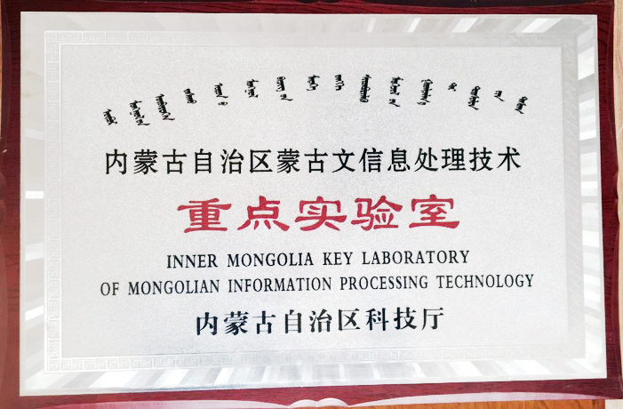
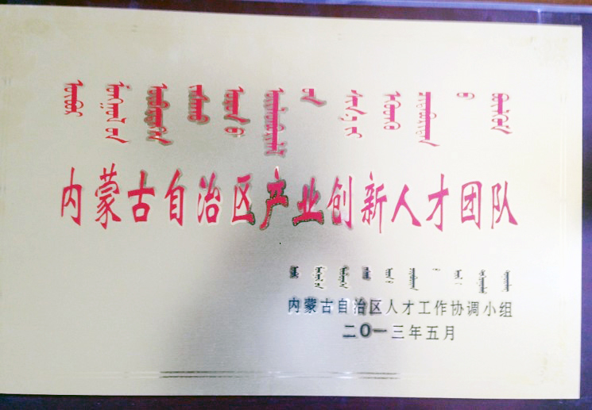

内蒙古自治区蒙古文信息处理技术重点实验室简介
内蒙古大学“智能与蒙古文信息处理”团队依托内蒙古大学计算机学院成立于上世纪九十年代末期，团队成立伊始就以蒙古文智能信息处理研究、蒙古文软件开发为重点，通过高水平的科研工作培养蒙古文信息处理领域的高层次人才，为少数民族语言信息化的发展起到了推动和人才保障作用。2003年、2007年团队先后承担了国家863计划课题和国家973计划专项课题，率先在国内外研制出第一个“蒙古文OCR系统”、“蒙古语大规模连续语音识别系统”、“蒙古语语音合成”、“西里尔蒙古文与传统蒙古文相互转换系统”、“蒙古文信息检索系统”，其中“蒙古文OCR系统”获得自治区科技进步二等奖，这些系统在国内外同行中产生了重要影响。团队从成立之初的5-6个人到现在的16人，其中13人具有博士学位，7人是从国内外引进的学术骨干和优秀博士。并且，团队中4人为蒙汉英兼通的蒙古族。依托该团队2007年内蒙古大学获批“内蒙古自治区蒙古文信息处理技术重点实验室”，“蒙古文软件研究与开发团队”入选2012年度自治区草原英才产业创新人才团队，现任实验室和团队负责人为高光来教授。
实验室主任 高光来教授（博士生导师）
近五年（2010-2015）实验室的科研也进入了快速发展期。科研项目方面：实验室新增国家自然科学基金项目9项、工信部电子发展基金课题6项（其中1项主持，5项参加）、自治区自然基金重大项目1项、横向课题10多项。研究方面：在著名期刊和学术会议发表学术论文60多篇，其中40多篇被SCI和EI收录；编写出版了《蒙汉文操作系统及办公软件应用》教材1部；“蒙古文网页制作工具的研究”获得内蒙古自治区科技进步三等奖；申请国家发明专利3项，获得计算机软件著作权16项。蒙古文软件研发方面：实验室开发了蒙古文信息检索系统、蒙古语大词汇量连续语音识别系统、蒙古语语音合成系统、蒙古文OCR系统、蒙古文古籍检索系统、新蒙汉翻译系统等，并且自主研发的“西里尔蒙古文与传统蒙古文相互转换系统”、“奥云蒙古文整词输入法”（下载量已达12000余套）和“面向手机的以蒙古文为主的多语种电子辞典软件”等一系列产品。实验室与中标软件有限公司合作研发了 “中标麒麟蒙古文操作系统”、“中标普华蒙古文office”软件，已上市实现产业化，为内蒙古自治区政府机关、教育、文化等行业赠送20000套，在内蒙古大学、内蒙古财经大学、呼和浩特民族学院等高校开设了相应的课程，这是我国完全具有自主知识产权且符合蒙古文国家标准的软件产品。


 蒙公网安备 15010502000079号
蒙公网安备 15010502000079号